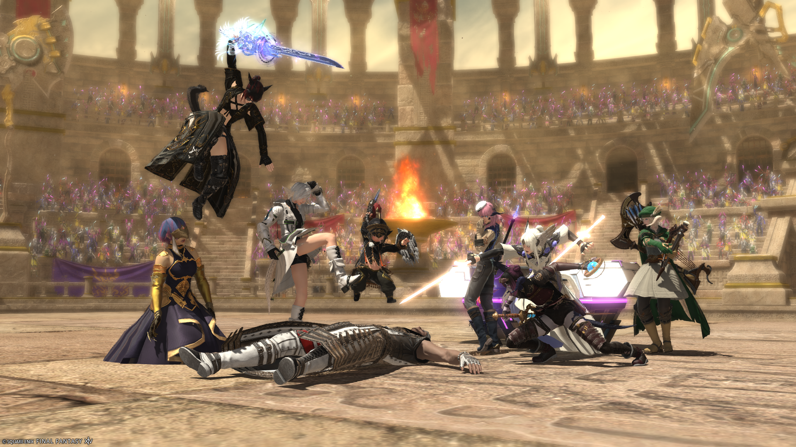

About Me Page
I have been playing Black Mage since the start of Anabaseios (Endwalker's Third Tier). I was introduced to the job by a friend who is no longer playing, but got me into why it felt very rewarding to play. I do not find myself to be an expert in the sense of being able to develop high-level Black Mage theory, but I believe I have the fundamentals and knowledge to help new players that pick up the job be able to improve and give themselves the ability to discover how they can further improve themselves.
